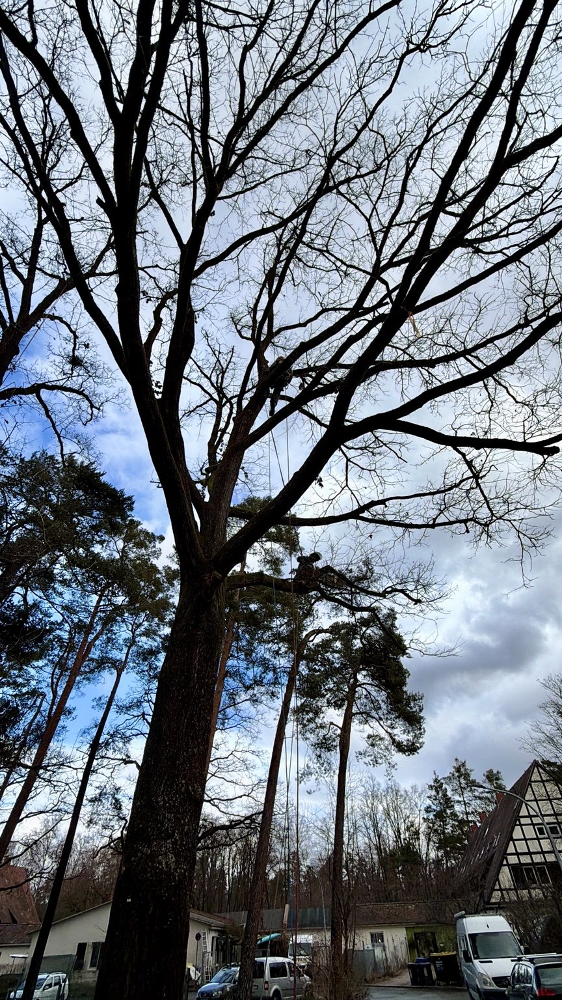
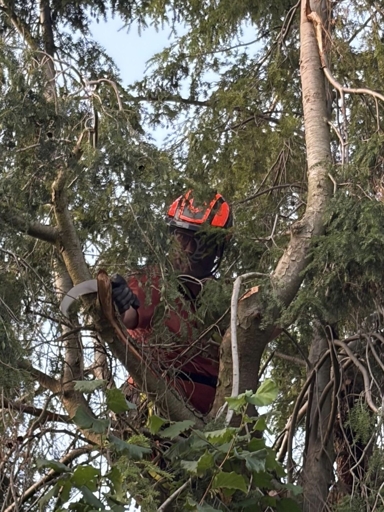
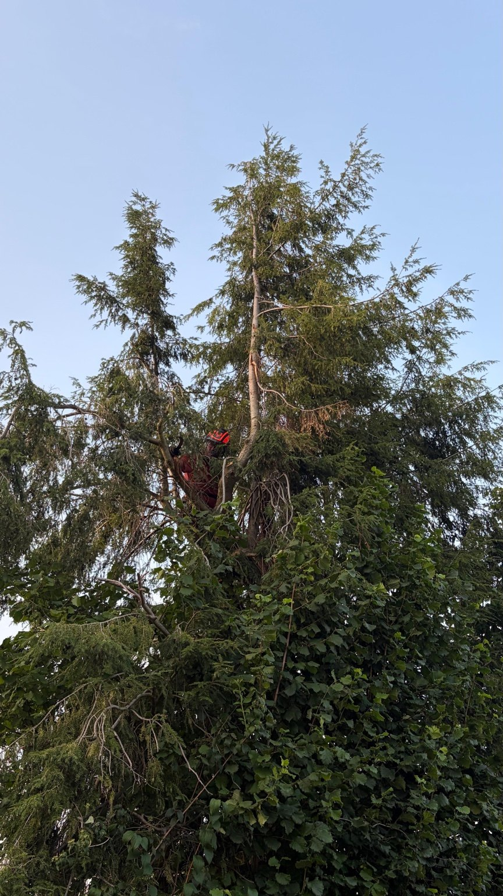

Kronenpflege
Totholz entfernen, Fehlentwicklungen korrigieren und die Krone fachgerecht pflegen.
Baumpflege · Seilklettertechnik
Baumpflege, Kronenarbeiten und anspruchsvolle Arbeiten direkt im Baum – flexibel und bodenschonend mit Seilklettertechnik.
Projekte ansehenBaumkletterer Markus
Jeder Baum und jeder Standort ist anders. Ziel meiner Arbeit ist eine fachgerechte, möglichst baumschonende Lösung – abgestimmt auf den Zustand des Baumes und die Anforderungen vor Ort.
Totholz entfernen, Fehlentwicklungen korrigieren und die Krone fachgerecht pflegen.
Arbeiten in der Baumkrone mit moderner Seilklettertechnik – auch dort, wo Maschinen nur schwer hinkommen.
Kontrollierte Arbeiten am Baum, angepasst an Platzverhältnisse und Umfeld.
Einblicke in die Arbeit



Weitere Projektbilder und Beschreibungen folgen.
Kontakt
Beschreiben Sie kurz, worum es geht. Ich freue mich auf Ihre Anfrage.
Kontaktdaten werden für die Veröffentlichung ergänzt.